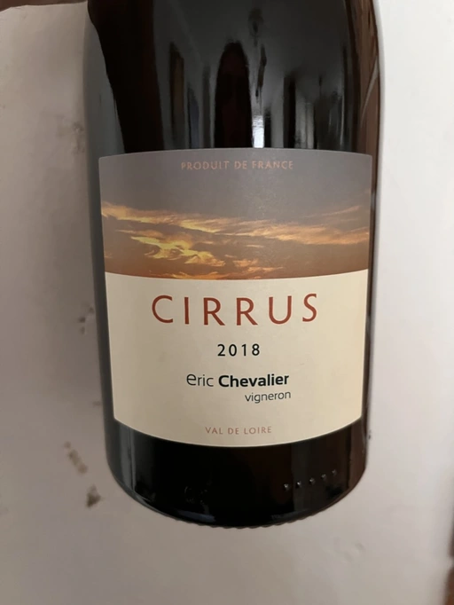

- Type
- White Still, Dry
- Producer
- Éric Chevalier
- Vintage
- 2018
- Location
- France, Vin de Table
- Grapes
- Sauvignon Gris
- Alcohol
- 12
- Sugar
- NA
- Price
- 1000 UAH, 1112 UAH
- Cellar
- N/A
This cuvée comes from a maceration of Sauvignon Gris (otherwise called Fié Gris), in whole bunches for 3 to 4 weeks. Aging on lees for 11 to 12 months.
Producer
Sometimes people who sell wine decide to try on a new role of a vine grower or even a winemaker. Éric Chevalier was a négociant with ten years of experience when he moved to his hometown of Saint-Philbert de Grandlieu, just southwest of Nantes. Next year, in 2006, he ended up taking over the family Domaine. His father, a vigneron, had stopped working the vineyards, and Éric was faced with a difficult choice. Despite being anything but enthusiastic, he was against replanting or selling vineyards. And instead, he decided not only to continue farming the Domaine but also to produce and bottle all of the family’s result of hard work.
In 2020 Éric Chevalier acquired organic certification, a rare achievement in Loire Valley. Especially considering the difficult climate and region’s love for high yields. In addition, Éric Chevalier is one of the few people still planting and producing wines from Fié Gris.
Ratings
2022-07-05 - 8.00
Probably the strangest wine of the evening. At first, I thought it was flabby and dull (hey, Fíe Gris?). But then my excitement grew, and I started to enjoy this wine. Like a lot! Especially the way tannin and acidity play in the taste, twisting and overflowing each other. In the nose, it’s non-mainstream and rather shy. Spoiled apricots, dark bread, ascorbic candy, smokiness, mango, flowers and subtle rot notes. Nice.
Tasted as part of Mixed Bag Vol. 1.